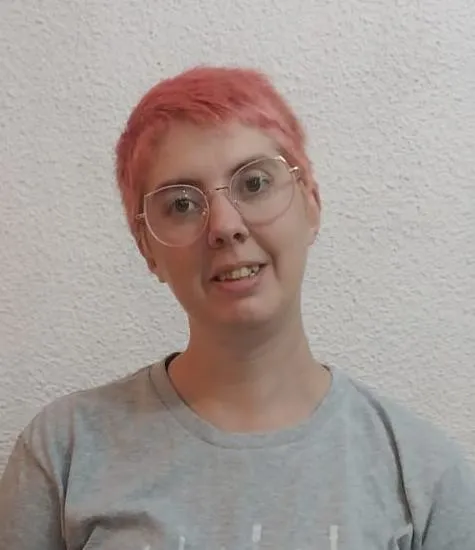
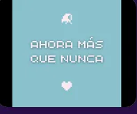
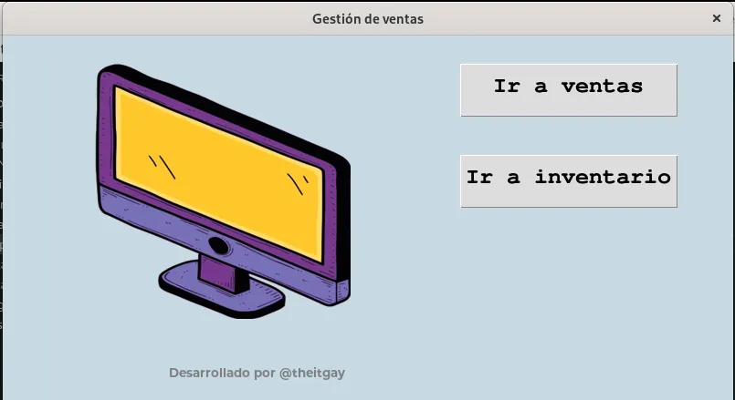

Anker Díaz Nocera
DATA ANALIST
¡Hola! Me llamo Anker Díaz Nocera. Soy le humane de un gato, Ridikulah. Actualmente vivo en la ciudad de Córdoba, Argentina. Mi ruta de aprendizaje en programación ha sido mayormente autodidacta, aunque actualmente curso la Tecnicatura Superior en Desarrollo de Software, y una diplomatura universitaria en Análisis de Datos. Las áreas que más me interesan son data analist y data science, y como hobbie hago jueguitos.

Hard Skills
Otras Skills
Proyectos personales

Ahora más que nunca
Prototipo jugable realizado en el marco de una Game Jam por la memoria. Para hacerlo se utilizó la plataforma Bitsy. Créditos: Bernarda Pages(Narrativa, Guión) - Anker Díaz Nocera (Game Design, Programación, Arte) - Aixa "AiiMii" Torres (Game Design, Audio) - Gisella GK (Arte)

Gestor de inventario
Programa de gestión de inventarios y ventas para escritorio. Proyecto en proceso
![captura de pantalla
sobre fondo de colores rojo y naranja. Una barra superior con color
violeta suave, en el lado izquierdo se lee: Anker Díaz Nocera, en el lado
derecho tres botones: inicio - skills - proyectos. Debajo, del lado izquierdo
un título que dice Anker Díaz Nocera en color negro, un subtítulo que dice
Data Analist en color violeta y texto que dice: ¡Hola! Me llamo Anker Díaz Nocera. Soy le humane de un gato, Ridikulah. Actualmente vivo en la ciudad de Córdoba, Argentina.
Mi ruta de aprendizaje en programación ha sido mayormente autodidacta, aunque actualmente curso la Tecnicatura Superior
en Desarrollo de Software, y una diplomatura universitaria en Análisis de Datos. Las áreas que más me interesan son data analist y
data science, y como hobbie hago jueguitos. Debajo, tres iconos de redes sociales:
linkedin, github e instagram. Del lado derecho, de forma redondeada con borde
violeta y dentro foto del rostro de una persona con pelo rosa, anteojos y sonriente](./assets/portada-portfolio.webp)
Portfolio personal
Portfolio personal desarrollado en el marco de la materia Desarrollo de Sistemas Web (frontend) en la Tecnicatura Superior en Desarrollo de Software. Proyecto en proceso